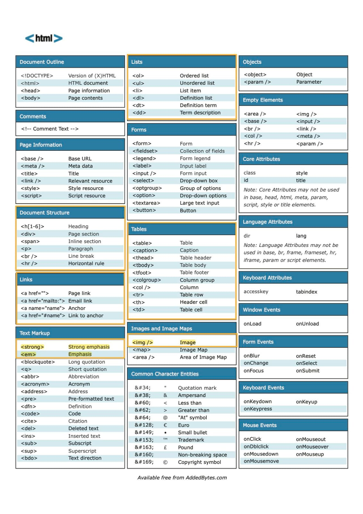

A sigla HTML corresponde a HiperText Markup Language, o que seria no português:
Linguagem de Marcação Hipertexto. Por mais que no seu nome tenha a palavra linguagem, o HTML não se trata
de uma linguagem de programação, mas sim de marcação. O HTML é o componente básico da web, ele permite inserir o
conteúdo e estabelecer a estrutura básica de um website. Portanto, ele serve para dar significado e organizar as
informações de uma página na web. Sem isso, o navegador não saberia exibir textos como elementos ou carregar imagens
e outros conteúdos.1
"O HTML não se trata de uma linguagem de programação, mas sim de marcação"
Os hipertextos são conjuntos de elementos conectados. Esses podem ser palavras, imagens, vídeos,
documento, etc. Quando conectados, formam uma rede de informações que permite a comunicação de dados, organizando
conhecimentos e guardando informações.1
Ao visitar uma página simples na web, você pode perceber que existem diferentes distribuições e tamanhos para títulos,
parágrafos, imagens, vídeos e qualquer outro elemento. Essa estrutura é estabelecida através do HTML. No inicio da web, era
comum encontrar sites apenas contendo textos e imagens simples, com estrutura básica e sem estilizações. Porém, nos dias atuais,
muito dificilmente você encontrará sites que possuam apenas elementos HTML. Portanto, podemos considerar o HTML o “esqueleto” da
sua página. Imagine então que além do esqueleto, é necessário ter o corpo. Para isso, temos então as linguagens CSS e o JavaScript,
que em conjunto com HTML, formam a base para todos os websites atuais.1
A primeira versão do HTML surgiu no início da década de 90. Desde então, diversas versões foram desenvolvidas, até que em 2014 a
versão 5 do HTML foi desenvolvida para aperfeiçoar a experiência da World Wide Web para os desenvolvedores e usuários finais. O HTML5
fornece o suporte de áudio e vídeo em alto nível que, até então, não existia nas versões anteriores sem o uso de plug-ins. Essa nova versão
também nasceu com uma proposta marcante: ela não é uma versão final, ou seja, seguirá recebendo mudanças ao longo do tempo. Anteriormente, as
versões não eram padronizadas para criação de seções comuns e específicas como rodapés, cabeçalhos, menus, artigos, etc. Com a introdução de
tags como header, footer, section, article, nav, etc, o HTML5 trouxe uma forma semântica de se trabalhar com
a linguagem. Com esse avanço, foi possível aumentar a interatividade sem a necessidade de instalação de plug-ins. É um código pronto para futuros
dispositivos, facilitando a reutilização da informação de diferentes maneiras. Portanto, possibilita diversas funcionalidades que antes só eram
possíveis com plugins, sem que isso sobrecarregasse o website, mantendo-o leve e rápido. Com isso, as novas tags semânticas trouxeram grandes
avanços para técnicas de SEO e para a leitura, pois informam ao navegador sobre o significado do conteúdo.1
As tags são códigos que definem toda a estrutura da página, tais como o seu tamanho, a fonte da letra, as cores, as quebras de linha e etc.1
As tags são formadas por uma estrutura própria, iniciam com o sinal “menor que”, em seguida vem o nome daquele elemento e por fim, o sinal “maior que”.
Podem ser dispostas em tags que precisam de fechamento e tags que fecham sozinhas (self-closing). O fechamento de uma tag será definido com uma barra (/),
sendo que no caso das tags de auto fechamento, não há necessidade da presença desse caractere.2
As tags de formulário são as que usamos para preencher informações. Elas precisam estar dentro de uma tag escrito form. Ela sozinha não gera nenhuma
informação no navegador, precisando de atributos, como o input type =, que usamos para indicar ao navegador que entraremos com dados e para selecionar
o tipo de campo de formulário. Esta tag de input não é necessário fechamento.3
Alguns tipos que podemos selecionar são:
"color"
"text"
"number"
Ainda dentro das tags de formulários temos também a tag button, que serve para criar um botão. Diferente da tag descrita anteriormente, esta precisa de
fechamento, e então entre a tag de abertura e fechamento digitamos o nome do botão, como por exemplo "envio de formulário":3
Aqui estão algumas das TAGs utilizadas e suas funções:
